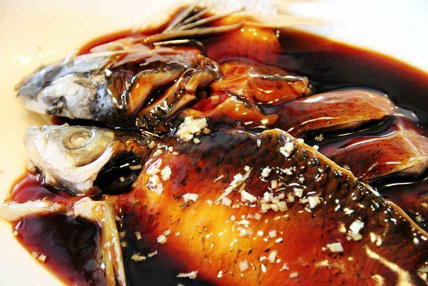
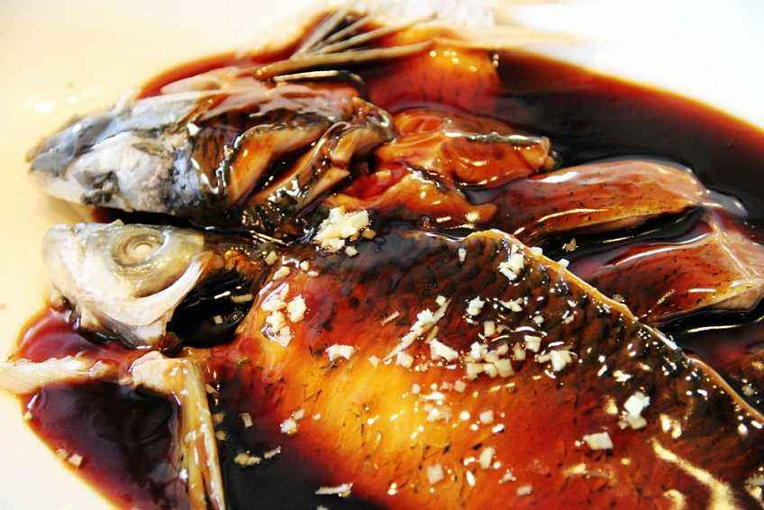
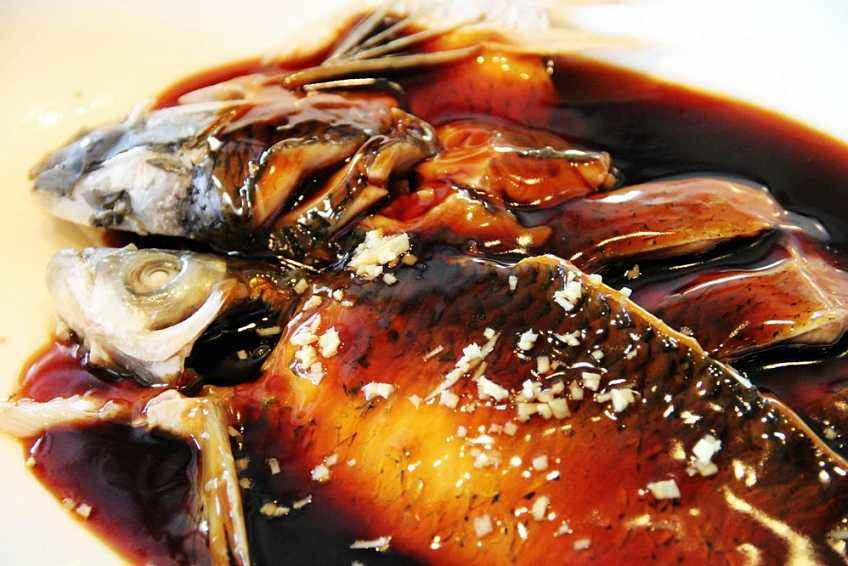

昵称：
galaksen
ID：
04120412
个人简介：
还没有介绍~还没有介绍~还没有介绍~还没有介绍~
粉丝
8
|
关注
2
关注
TA的游记
TA的点评
TA的提问
TA的回答
galaksen
的个人空间
当前位置
TA的粉丝（共
4个
）
用户名1
用户名2
用户名3
用户名4
TA还没有粉丝哦~
当前位置
TA关注的人（共
4个
）
用户名1
用户名1
用户名1
TA还没有关注任何人哦~
当前位置
TA的游记
已发表：
15篇
香港|山海之间的钢铁森林(详细攻略+美食推荐)
2019-12-14 23:24
浏览量(131)
点赞(123)
评论(5)
收藏(5)
香港|山海之间的钢铁森林(详细攻略+美食推荐)
2019-12-14 23:24
浏览量(131)
点赞(123)
评论(5)
收藏(5)
TA还没有发表过游记哦~
当前位置
TA的点评（共
3个
）
TA在
2018-10-13 05:56:31
，点评了
美食
——
“
西湖醋鱼
”
总体评分：
8
分
西湖醋鱼是最正宗的西湖草鱼来做，草鱼的刺比较多，肉也没有其它价格相比较而言贵的鱼好吃细腻，但是用醋来配上草鱼就可以制作出来非常极其美味的味道。由于草鱼身上都会带一点土的味道，所以店家一般在草鱼要被做成菜的前几天，什么都不投喂，这样草鱼就会把自身的杂物排出去一些，土腥味道也就没有那么浓重了。所以我们如果想要吃到没那么土腥的西湖醋鱼的话，小编教大家一个窍门，就是在选择饭店的时候最好要看一看这家店有没有专门喂养草鱼的鱼池，如果有的话这家店做的西湖醋鱼起码要比没有的他们做的正宗。

TA还没有任何点评哦~
当前位置
TA的提问（共
3个
）
拉萨
八月旅行国内去哪儿好？
预计8月6日至9日，共计4天，从北京出发。想咨询各位国内去哪儿玩儿比较好～我这儿在思考青岛和威海，有什么推荐吗？
季节
行程安排
浏览量(
1231
)
关注数(
15
)
共有回答(
13
)
提问于
2019-11-1 11:20
TA还没有任何提问哦~
当前位置
TA的回答（共
3个
）
TA在
2018-10-13 05:56:31
，回答了
问题
：
“
八月旅行国内去哪儿好？
”
以下是TA的回答：
四天时间去远处旅行时间太紧张了，青岛威海就是看大海，而且海水浑浊，如果特别喜欢大海可以去。如果自驾游建议去塞罕坝国家森林公园，乌兰布统大草原，第一天早上从北京出发约二个小时到达河北承德在避暑山庄边酒店住下，午餐后游避暑山庄。第二天早上出发一个多小时到达塞罕坝国家森林公园游玩，下午开一个小时到达乌兰布统大草原住宿，第三天游玩大草原骑马品尝当地美食，第四天返回北京。这条线路是我自驾游走过的。夏季草原景色非常美尤其是八月初景色更美。
点赞(
100
)
TA还没有回答任何问题哦~


 
